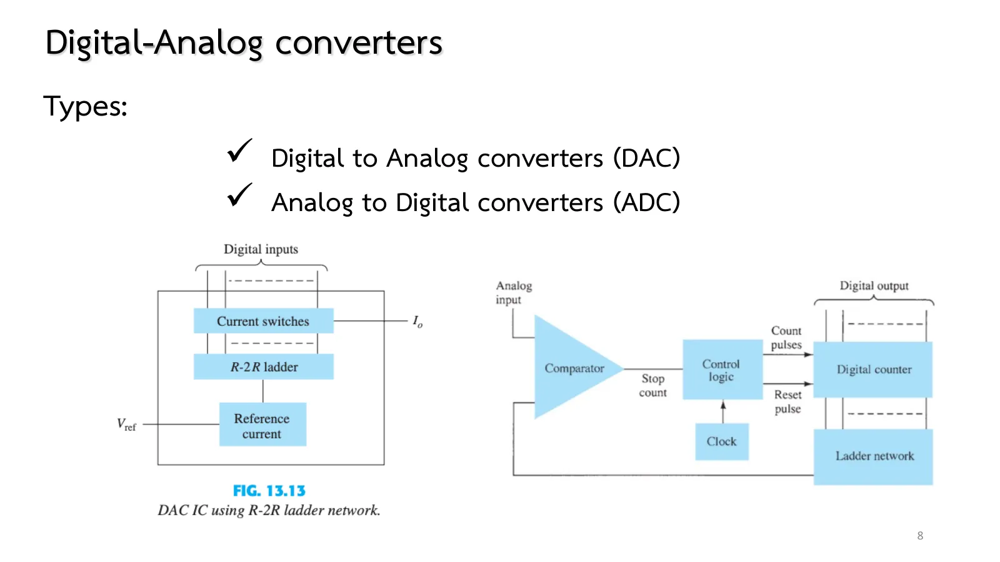
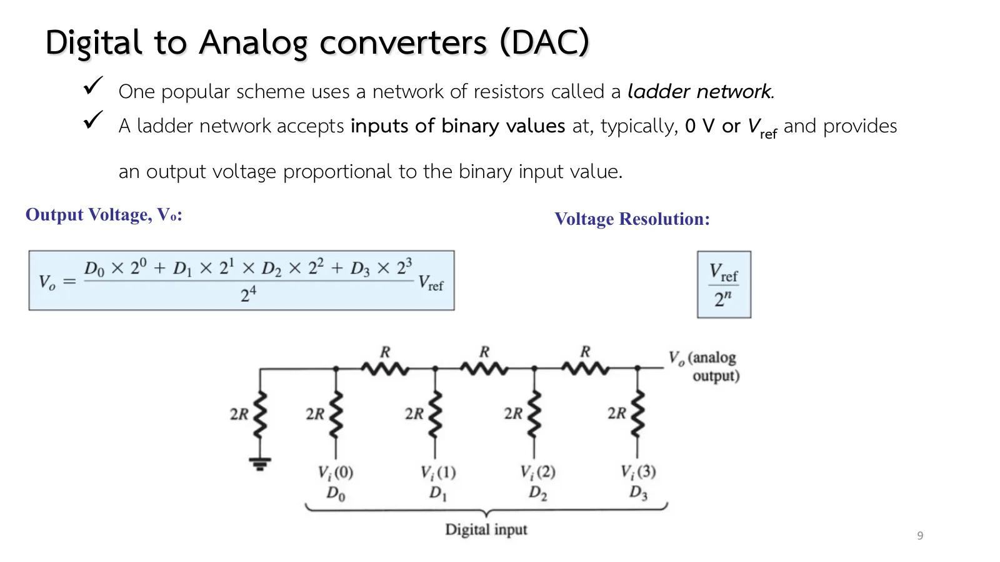
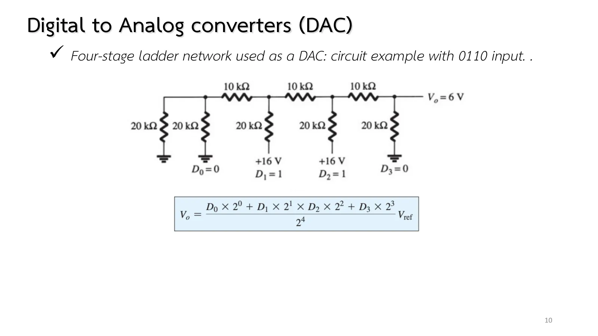
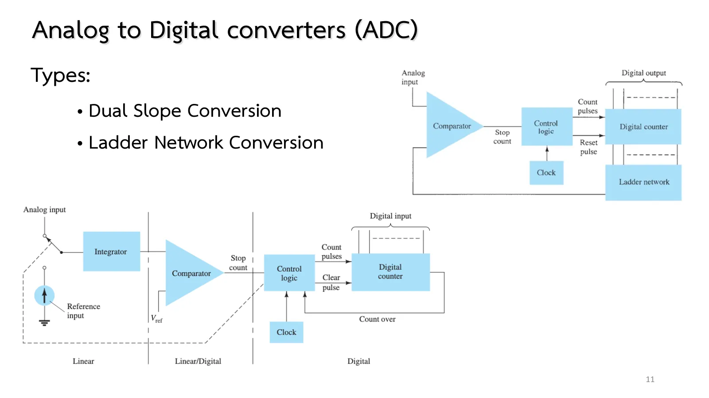
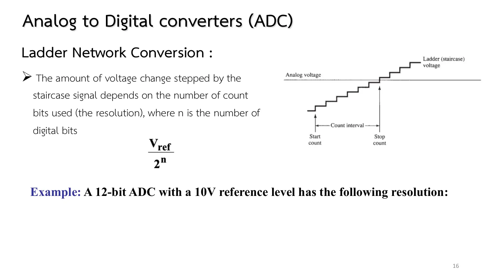
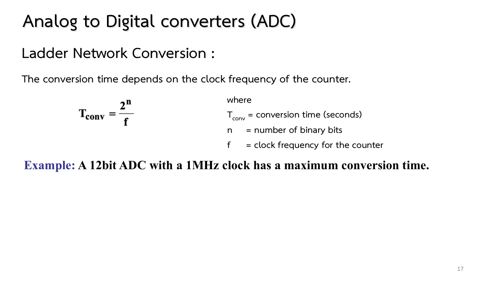

Every time a microcontroller reads a sensor or sends a sound to a speaker, a number crosses the border between two worlds: the analog world, where a voltage can take any value, and the digital world of 0s and 1s. This page follows one number across that border and back: out from bits to a voltage with an R-2R ladder digital-to-analog converter (DAC), and home again from a voltage to bits with two kinds of analog-to-digital converter (ADC). Every circuit here is actually solved by the engine (chapter 8 slides, pp. 8–17; Boylestad sections 13.3–13.4).
The R-2R ladder (pp. 9–10, Fig. 13.12, Eq. 13.1): only two resistor values; from any node one sees R, R, 2R, and each stage to the left halves the weight, so the output is the 1 : 2 : 4 : 8 weighted sum of the bits. 0110 with 16 V gives 6 V.
Resolution (p. 16, Eq. 13.2): the smallest step \(V_{ref}/2^n\): 4 bits/16 V → 1 V, 10 bits/10 V → 10 mV, 12 bits/10 V → 2.44 mV. DAC ICs (Fig. 13.13) use an R-2R ladder with current switches.
The dual-slope ADC (pp. 12–14, Fig. 13.14): ramp with \(V_{in}\) for \(N_1\) clocks, back with \(V_{ref}\) to zero, count \(N_2 = N_1V_{in}/V_{ref}\): \(RC\) and the clock cancel, so it is accurate; used in digital multimeters.
The ladder-network ADC (pp. 15–17, Fig. 13.15): counter + DAC + comparator, stopping when the staircase passes the input. Maximum conversion time \(2^n/f\): 12 bits at 1 MHz → 4.096 ms (244 conversions per second, 488 on average).
The simulation: the ladder is a real circuit (8 resistors + bit sources); the counter, the stop logic and the dual-slope switches run between time steps; the op-amps and comparators are those of chapters 7 and 8.1.
Open the DAC chip of slide p. 8 and you find resistors joined into a ladder of only two values, R and 2R. The trick is that every junction sees 2R in both directions, so the current halves at every rung: a bit one rung closer to the output weighs twice as much as the one before it, exactly as in a binary number.
The result is a single formula (slide p. 9): \(V_o = \dfrac{D_0 2^0 + D_1 2^1 + D_2 2^2 + D_3 2^3}{2^4}V_{ref}\), and the smallest step a four-bit ladder can make is \(V_{ref}/2^4\).

สไลด์หน้า 8: ไอซี DAC แบบ R-2R และ ADC แบบบันได (รูป 13.13)Slide p. 8: an R-2R DAC IC and the ladder-network ADC (Fig. 13.13)

สไลด์หน้า 9: บันได R-2R และสมการ 13.1–13.2Slide p. 9: the R-2R ladder and Eqs. 13.1–13.2
The buttons \(D_3\)–\(D_0\) connect each leg of the ladder to \(V_{ref}\) (1) or 0 V (0). The engine finds the output from the eight resistors directly; the lower panel compares it with Eq. 13.1 and places the point on the 16-step staircase. Turn one bit on at a time: 1, 2, 4, 8 V, the weight doubling with each step to the right. Move \(V_{ref}\) and watch every step scale.
Slide p. 10 feeds the code 0110 from a 16 V supply: bits \(D_1\) and \(D_2\) go to +16 V, \(D_0\) and \(D_3\) to ground.
Before opening the solution, count in your head: 0110 is six and \(2^4\) is sixteen, so the output should be six sixteenths of 16 V. Then see whether the real ladder, solved node by node by the engine, agrees.

สไลด์หน้า 10: ตัวอย่าง 0110 → 6 V (รูป 13.12b)Slide p. 10: the 0110 → 6 V example (Fig. 13.12b)
↓ โจทย์ 1: ใส่คำตอบก่อน แล้วเปิดเฉลยทีละขั้น
↓ Problem 1: type your answer first, then open the solution step by step
A four-stage R-2R ladder, R = 10 kΩ, 2R = 20 kΩ, \(V_{ref}\) = 16 V, code \(D_3D_2D_1D_0\) = 0110. Find \(V_o\), the resolution and the largest output (1111).
The way home is harder: we must ask which number the incoming voltage equals. Slide p. 11 gives two answers. The easiest to picture is the ladder method (slide p. 15): put the DAC of part 1 behind a counter that counts up by one at every clock tick, and the ladder produces a staircase that climbs step by step.
The comparator of page 8.1 watches for the moment the staircase passes the input and tells the counter to stop. The number left in the counter is the answer: the whole circuit guesses one value after another until it overshoots.

สไลด์หน้า 11: ADC สองวิธีSlide p. 11: the two ADC methods
The same ladder as in section A, driven by a counter that advances every clock period; a comparator compares the staircase with \(V_{in}\). The first time the staircase exceeds \(V_{in}\) the counter stops; the count is the conversion (the picture repeats every 16 periods). Set \(V_{in}\) and the clock: small values are reached quickly, values near 16 V take almost the full \(2^n\) periods.
Each step of the staircase is \(V_{ref}/2^n\) high (slide p. 16): the more bits, the finer the steps. A 12-bit ADC with a 10 V reference resolves 2.44 mV.
Resolution has a price. In the worst case the counter climbs all \(2^n\) steps, so the conversion takes \(2^n/f\) (slide p. 17): 12 bits with a 1 MHz clock need up to 4.096 ms. One more bit doubles the resolution and doubles the time.

สไลด์หน้า 16: ความละเอียด \(V_{ref}/2^n\)Slide p. 16: the resolution \(V_{ref}/2^n\)

สไลด์หน้า 17: เวลาแปลง \(2^n/f\)Slide p. 17: the conversion time \(2^n/f\)
สไลด์หน้า 16–17 จบที่ "has the following resolution:" และ "has a maximum conversion time." โดยไม่มีคำตอบ: 10 V/4096 = 2.44 mV และ 4096/1 MHz = 4.096 ms (ตำราหน้า 731)
Slides pp. 16–17 stop at "has the following resolution:" and "has a maximum conversion time." with no answers: 10 V/4096 = 2.44 mV and 4096/1 MHz = 4.096 ms (book p. 731).
↓ โจทย์ 2: นับจนเกิน 5.7 V แล้วคิดความละเอียดและเวลาแปลงของ 12 บิต
↓ Problem 2: count until the staircase passes 5.7 V, then work out the resolution and conversion time of 12 bits
2
รูป 13.15: นับจนเกิน 5.7 V แล้วความละเอียดของ 12 บิต
Fig. 13.15: count until past 5.7 V, then the 12-bit resolution
สไลด์หน้า 15–17 · Boylestad รูป 13.15, หน้า 731
Slides pp. 15–17 · Boylestad Fig. 13.15, p. 731
โจทย์
ADC แบบบันได 4 บิต \(V_{ref}\) = 16 V นาฬิกา 1 kHz แปลง \(V_{in}\) = 5.7 V จงหาค่านับและเวลาที่ใช้ แล้วหาความละเอียดของ ADC 12 บิตกับ \(V_{ref}\) = 10 V และเวลาแปลงสูงสุดที่นาฬิกา 1 MHz
Problem
A 4-bit ladder-network ADC with \(V_{ref}\) = 16 V and a 1 kHz clock converts \(V_{in}\) = 5.7 V. Find the count and the time taken; then the resolution of a 12-bit ADC with \(V_{ref}\) = 10 V and its maximum conversion time with a 1 MHz clock.
ภาพจำลองเดินตามเวลา (ช้าลง 500 เท่า) และเริ่มใหม่ทุก 16 ms ลองตอบก่อน
The simulation runs in time (slowed 500×) and restarts every 16 ms. Try it first.
The second method needs no ladder at all (slide p. 12): it uses the integrator of chapter 7. First the input is applied for a fixed time, and the integrator output ramps away by an amount that grows with the input (slide p. 13). Then a reference of the opposite sign is switched in, and the output ramps back at a slope that never changes (slide p. 14).
The further it went, the longer it takes to come back, so a counter running during the return ends with a number proportional to the input. Noise is averaged away during the integration, which is why nearly every digital multimeter converts this way.
The simulation uses chapter 7's inverting integrator, so its waveform ramps down and back up (Fig. 13.14b draws it the other way); the count is the same. The R, C, clock and \(V_{in}\) of the simulations are this page's own values; the book gives only the block diagram.
Slides pp. 12–14 · Boylestad Fig. 13.14 (this page's values)
โจทย์
อินทิเกรเตอร์ R = 10 kΩ, C = 1 µF นาฬิกา 1 kHz ช่วงแรกต่อ \(V_{in}\) = 3 V นาน \(N_1\) = 10 คาบ แล้วต่อ \(-V_{ref}\) = −10 V จนขาออกกลับถึง 0 จงหาแรงดันปลายช่วงแรก เวลาขากลับ และค่านับ \(N_2\)
Problem
An integrator with R = 10 kΩ, C = 1 µF and a 1 kHz clock: the first phase connects \(V_{in}\) = 3 V for \(N_1\) = 10 periods, then \(-V_{ref}\) = −10 V until the output is back at 0. Find the voltage at the end of the first phase, the return time and the count \(N_2\).
Section A: turn on \(D_0\) alone and hover over the resistors one by one: the current from the 16 V source halves at every node to the right, leaving 1/16 at the output. That is where the 1 : 2 : 4 : 8 weights come from.
Section A: the codes 1000 and 0111 differ by one step (8 and 7 V) although all four bits flip. With imperfect resistors this is where a real ladder errs most.
Section B: set \(V_{in}\) = 15.5 V: the count reaches 15 and the staircase (15 V) still has not passed it; the input is out of range and the counter sits at 1111.
Try this 2 — problems 1–3
Problem 2: the ladder method's error is "within one step": 5.7 V gives 6 (0110); \(V_{in}\) = 6.2 V would give 7.
Problem 3: in the simulation RC = 10 ms happens to equal \(T_1\). Imagine RC = 20 ms: the ramp reaches −1.5 V and returns in the same 3 ms. That is what "RC cancels" means.
Problem 3: the comparator on the right gives 5 V while the output is negative and returns to 0 at the instant the ramp is back at zero: that is the stop signal.